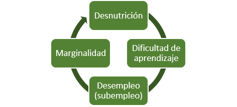

La desnutrición puede causar daños irreversibles en el cerebro de los niños
1 de cada 12
Niños tucumanos entre 0 y 4 años sufren de algún tipo de desnutrición (emaciación, bajo peso o baja talla).
80%
Del peso total del cerebro es adquirido en los primeros 14 meses de vida, por la nutrición es critíca en esta etapa.

La desnutrición en edad temprana provoca un daño neuronal irreversible que se manifestará durante el transcurso de la vida y se transmitirá a las siguientes generaciones.
"La desnutrición es un problema que podemos y debemos solucionar entre todos"